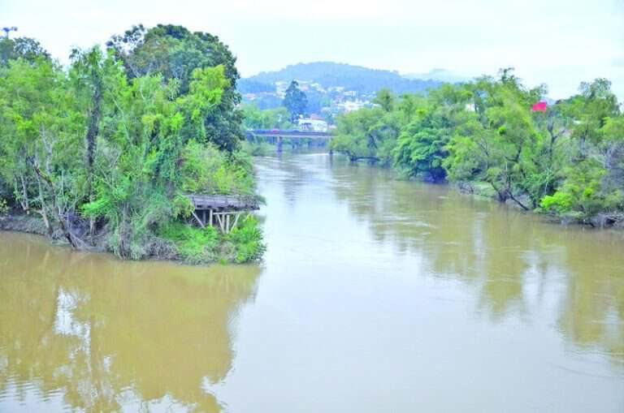

Bem-vindo à Página Principal
Sobre o VoluntaRios
O VoluntaRios é uma plataforma que conecta pessoas interessadas em ajudar comunidades locais por meio de ações voluntárias. Nosso objetivo é criar um impacto positivo, fortalecendo laços entre voluntários e organizações.
Como Funciona?
A plataforma é simples e intuitiva. Você pode:
- Criar uma conta e acessar oportunidades de voluntariado.
- Procurar ações que combinem com seus interesses e habilidades.
- Conectar-se com ONGs e participar de projetos incríveis.
Benefícios de Ser Voluntário
Participar de ações voluntárias oferece muitos benefícios, como:
- Desenvolvimento pessoal e profissional.
- Fortalecimento de habilidades de trabalho em equipe.
- Impacto positivo na vida de outras pessoas.
